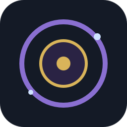

A calm focus game from Team GOACTO. Growing Ourselves and Contributing To Others.
Mindscape: practice focus as a short browser game. Want a simple daily focus tracker? Try Focus Log.
A session is a few quiet minutes of real focus.
Use Wi-Fi
Loads about 85 MB the first time.